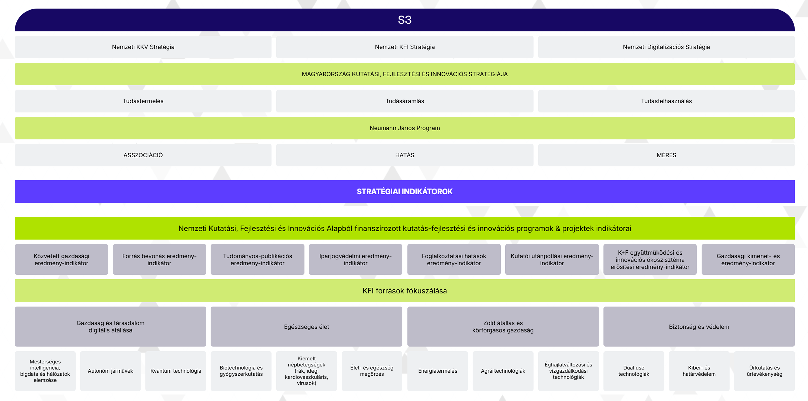
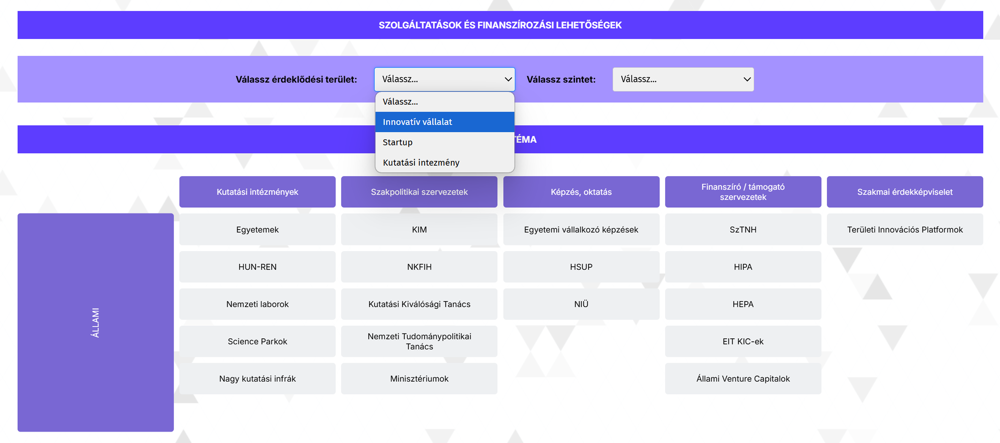
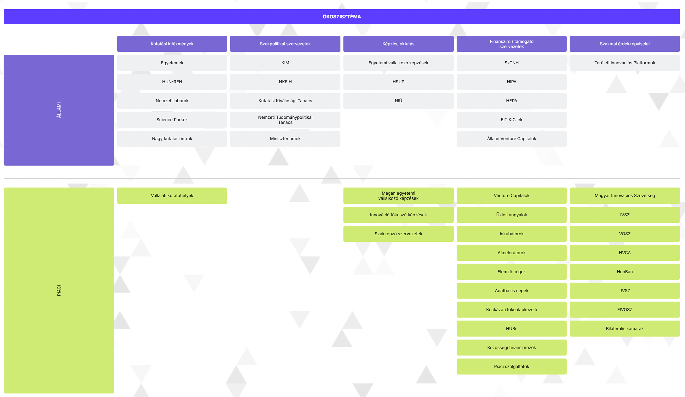
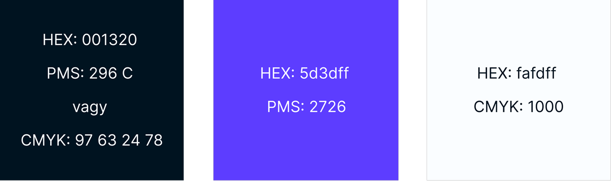
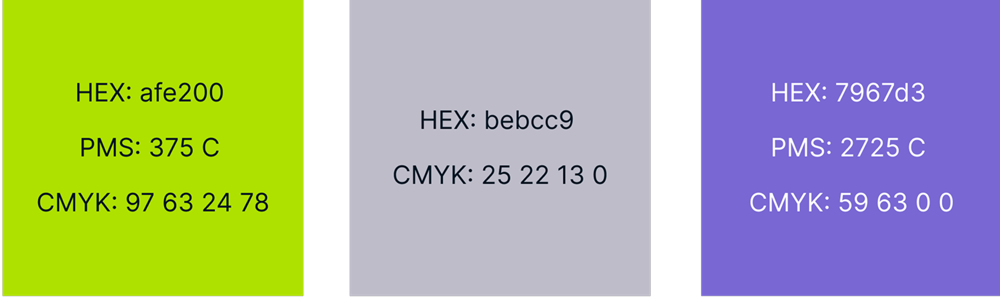
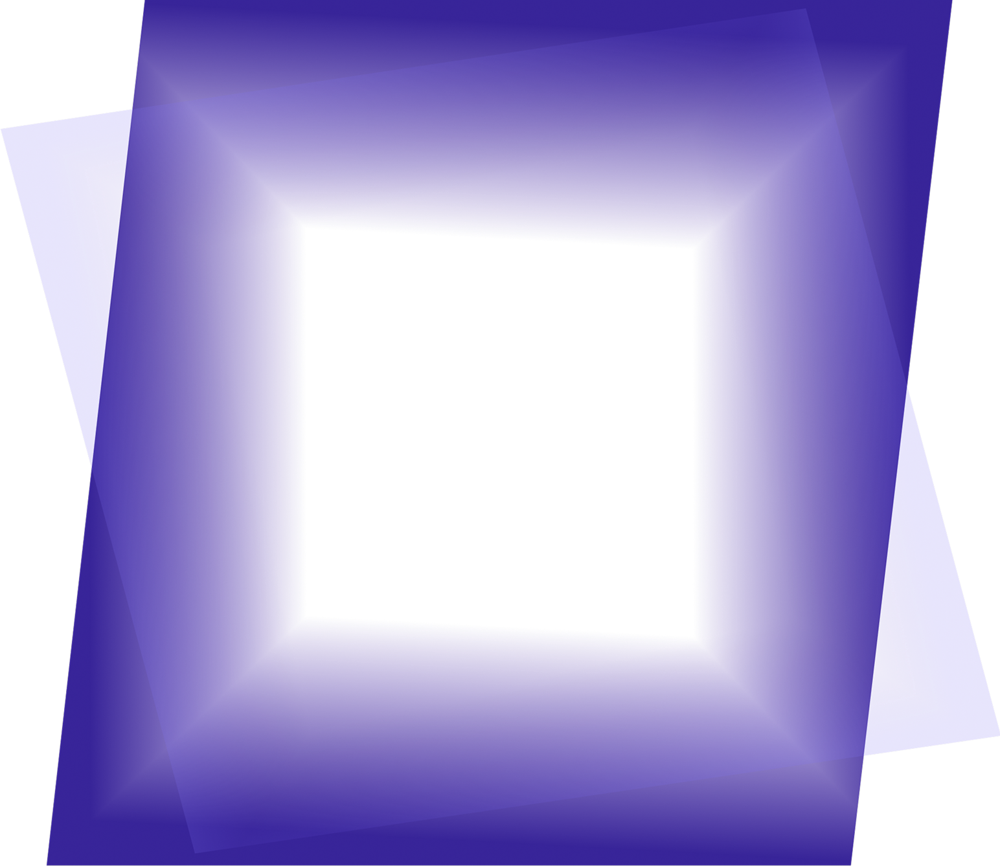
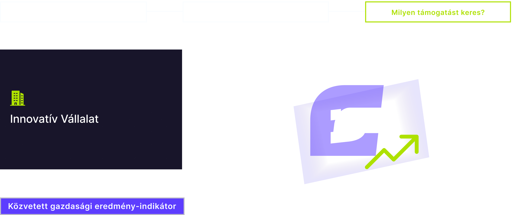
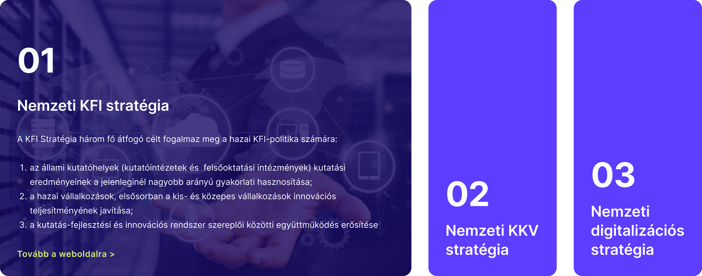

The Project
For this project, the Hungarian Innovation Agency (NIÜ) announced a contest for our university to create a web design for the innovation ecosystem map to make the latest information, funding, and collaboration opportunities accessible to all stakeholders in an attractive and user-friendly interface.
This aims to facilitate the realization of innovative projects, connect universities and companies, and promote knowledge and technology transfer.
The Brief
For our brief we had a pdf of a table, that contained all the information, that should be found on the website. It was divided into three main sections, the strategic frameworks, the services & funding frameworks, and the ecosystem participants.
Strategic Frameworks
The S3 serves as the umbrella strategy for the SME Strategy, RDI Strategy, and Digitalization Strategy. The site had to explain all of the neccessary information about each one, including their mission and their indicators.
Services & Funding Frameworks
All available services and funding frameworks should be visible by default. It is important to filter available services and funding frameworks based on the three main classifications - innovative companies, startups and research institutes - and their levels.
Ecosystem Participants
It is important to distinguish between public and private sectors and maintain defined categories: research institutions, policy organizations, education and training, funding/support organizations, professional advocacy.
The Process
Low-Fidelity Wireframes
Design Systems
We made two versions for the design. When we were choosing colors and fonts, we aligned ourselves with NIÜ's Brandbook so that the user interface fits perfectly into the agency's image. For the background pattern, we used the NIÜ nano element, which appears in several places on the site.
Primary Colors
Secondary Colors
Niü Nano Element
Version 1
Our first design concept is a clean, angular version that aims to reflect the modern image of the brand and facilitate simpler, more transparent handling.
Version 2
In our second design concept, we worked with rounded elements to give the site a more friendly, welcoming mood. This also provides more contrast between the sharp corners, making the important information more visible to the user.